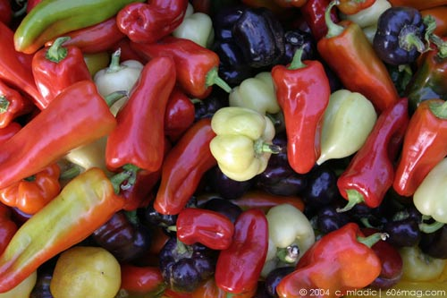

 |
It's easy to fall into a Chef Boyardee slump during the colder months. You know how it goes: It gets dark so early that you don't want to make a big production out of dinner. Since it already feels like the middle of the night, there's no sense in taking out all the pans to clang them around loudly on the stovetop. When it's pitch black outside, it makes sense only to eat pre-packaged or microwaveable canned food, the kind of things that you would prepare in the middle of the night. Never mind that the only time you eat those things – Spaghetti-Os, Beef-O-Roni, Rice-O-Roni, things with “O” in the name – is in the middle of the night is when you're too drunk to taste what you're eating. Not only is it dark in the winter, but there is also the fact that nothing tastes fresh anyway. Everything has that stale, shipped-from-somewhere-warmer-than-here taste. You just end up getting bitter that it's warmer everywhere than it is here. Too bitter to cook, anyway. So you stick to the canned food. At first you kind of feel like a dog, eating the same canned food for every meal. But that's winter, right? Not this year. Chicago has a six-year-old farmer's market that, for the first time ever, will remain open through the fall and early winter months. This means that you can get all the fresh vegetables – even the ones that go into your signature summer five-star quality meals – year round. Let your roommates eat the rest of the canned food you've stocked up on for the season, because the Green City Market will be opening a temporary market inside a space at the Lincoln Park Zoo. With a motto of “food you can trust,” the market works to connect local sustainable farmers with the people of Chicago that shop for fresh foods. While the market is open to everyone, many of those who frequent the Green City Market are some of the city's most renowned chefs and restaurateurs. In order to highlight the fact that Chicagoans who shop the market have available to them the same fresh ingredients that world-class chefs use in their recipes, the Green City Market hosts a weekly chef's demonstration throughout the summer and fall months. Featured chefs have included those from signature neighborhood cafés such as Lula's Café in Logan Square and Milk and Honey Café in Wicker Park, as well as chefs from fancier establishments, like Tru and the Four Seasons Restaurant. The goal of the market is to promote appreciation for local, fresh, sustainably-raised food, and what better way to do that than to lure Chicagoans in with the divulgence of chef's secret recipes? Everyone's a sucker for secret recipes, even you, you Chef Boyardee-lovin'-fiend. The Market prides itself in carrying a wide range of organic produce, poultry, hormone-free beef, grains, herbs, organic breads, cheeses and fresh flowers. Chicago's Green City Market is open Wednesdays from 7 a.m.-1:30 p.m. at 1750 N. Clark Street. |